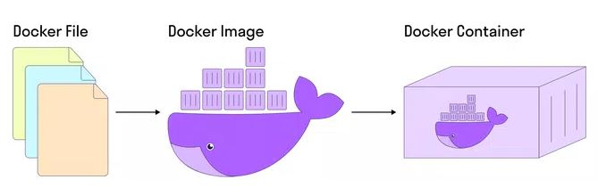

1. быстро протестировать фикс/фичу локально;
2. запустить быстро приложение, на установку и настройку которого уходит много времени;
3. запустить автотесты в разных браузерах, используя определенные библиотеки.
Два основных понятия в Docker — Docker Image и Docker Container.
Docker Image — набор приложений, библиотек со всеми зависимостями и настройками, из которого разворачивается контейнер.
Docker Image создается на основе Docker-файла, в котором указывается всё необходимое для работы приложения.
Docker Container — работающие приложение, созданное на базе Docker Image
Таким образом, мы берем приложение со всеми его настройками и зависимостями, помещаем в контейнер (ровно так же, как груз). Переносим его в нужное место (на нужное устройство) и запускаем.
